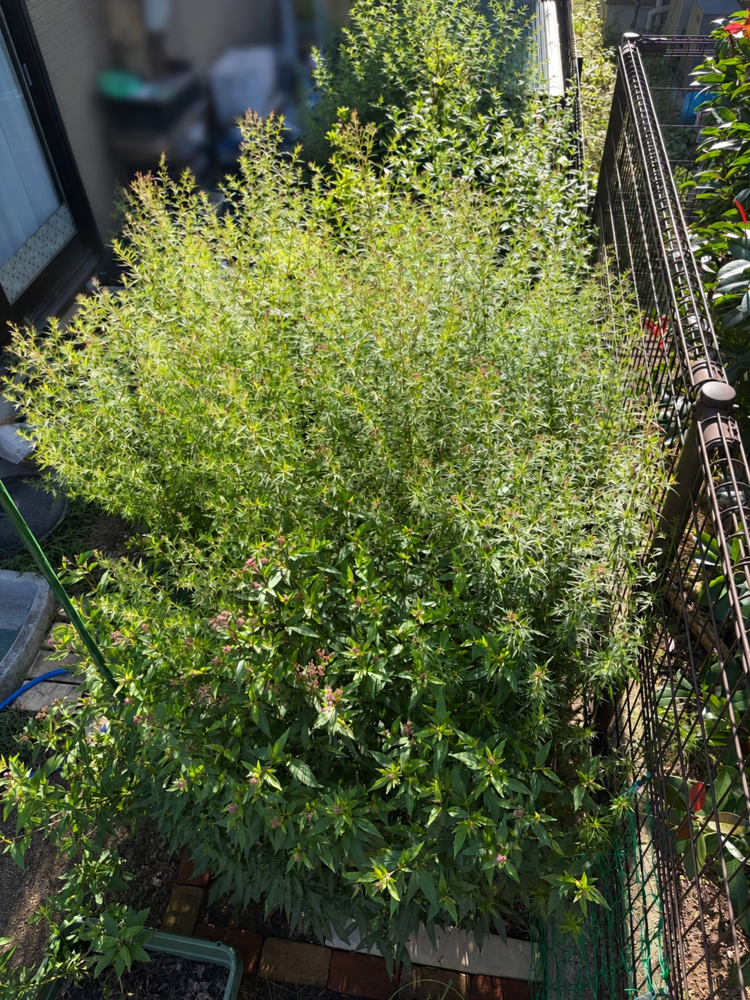

緑が主役だった花壇に、花の色が加わってきました
9月22日の花壇全体です。前回の9月5日から17日がたちました。葉や枝が重なり合うほどの密な茂りはそのままに、今回は花壇のあちらこちらでピンク色の花房や蕾が目立つようになってきました。
9月5日は、手前の葉幅のある株も、中央から奥へ広がる細かな葉の株も、緑の葉の重なりが印象的でした。茎先もまだ葉に紛れて見える部分が多く、花壇全体としては、花よりも葉の量や株の広がりを感じる姿でした。
それから半月ほどが過ぎ、葉の間に小さな花のまとまりが見えるようになりました。まだ一面に花が咲きそろっているわけではありませんが、緑で覆われていた花壇に少しずつ色が加わり、秋の開花へ向かう変化が感じられます。

手前では、ピンク色の花房が葉の上に顔を出しています
手前の葉幅のある株では、複数の茎先にピンク色の花房が見られます。花房は一か所に集中せず、手前から中央寄りにかけて点々と散らばり、濃い緑の葉の上で目を引くようになりました。
9月5日には葉先の明るい緑が目立っていましたが、今回はその葉の間から花房が持ち上がり、茎先の姿が変わってきています。葉が重なる株の中にも花の色が見えるため、前回よりも開花の季節らしい表情になりました。
ただ、花房の大きさや見え方には違いがあります。ピンク色がまとまって見えるものもあれば、まだ小さく締まった蕾が中心に見えるものもあり、株全体が同じ段階まで進んでいるわけではありません。花房ごとに少しずつ時期をずらしながら、咲き進んでいる様子です。
現時点では、花が葉を覆い隠すほどではなく、茂った葉の上に花房が点在する状態です。これからそれぞれの花房がどこまで広がっていくのか、楽しみになってきました。
中央では、細かな枝先に小さな蕾が広く散らばっています
花壇の中央を大きく占めている細かな葉の株では、枝分かれした茎が横にも上にも広がり、その先々に小さなピンク色のまとまりが見られます。
手前の株のように花房がひとまとまりで目に入るというよりも、細かな枝先に蕾が散らばっているため、株全体に小さな色の点が加わったような見え方です。高く伸びた茎の先だけでなく、中央の葉が重なった部分やフェンス寄りにも色づいた部分があり、花を付ける枝先が広い範囲に分布しています。
9月5日にも、中央の株は横へ大きく広がり、十分なボリュームがありました。今回は、その茂りの中で枝先の色づきが目立つようになったことが大きな変化です。葉や茎の緑が主体である点は変わりませんが、花壇を見るときに、葉の広がりだけでなく、その先に付いた蕾にも目が向くようになりました。
まだ小さく締まって見える部分が多く、中央一帯が満開になった状態ではありません。今は、密に広がった枝の先で、これからの開花につながる蕾が目立ってきた段階と感じます。
手前と中央で、花の見え方に違いがあります
花壇全体を眺めると、手前では葉の上にまとまったピンク色の花房が見え、中央では細かな枝先に小さな蕾が散らばっています。同じ花壇の中でも、葉の形や枝の伸び方によって、花の見え方がずいぶん違います。
手前の株は葉が大きく、花房と葉の境目が分かりやすいため、花のまとまりが目に入ります。一方、中央の株は葉も枝も細かく、花房や蕾が緑の中に入り交じっています。こちらは一つ一つの花房よりも、株全体に広がる細かな色づきとして感じられます。
花壇全体が一度に同じように咲くのではなく、それぞれの株や枝先が異なる段階で秋を迎えているようです。すでに花の色が目立つ部分と、これからの開花を待つ蕾の多い部分が混在しており、これからも場所ごとの変化を楽しめそうです。
奥の背の高い株まで、緑の厚みが続いています
中央の細かな葉の茂みの奥には、さらに背の高い茎が立ち上がっています。手前の株から中央の広がる株、奥の高い株へと高さが変わり、花壇全体に奥行きが出ています。
奥側は、この全景では花の細部までは分かりにくいものの、緑の葉と立ち上がった茎の存在感があります。花壇の手前だけでなく奥まで植物が続いているため、ピンク色の花房が見える部分も、厚みのある緑に包まれるような姿になっています。
葉の茂りは引き続き密で、株同士の境目が分かりにくいところもあります。9月5日から続く花壇のボリュームを保ちながら、今度は茎先の花房や蕾が景色に加わってきました。
咲きそろう前の、場所ごとの変化を楽しみに
9月22日の花壇は、全体としてはまだ緑が主役です。その中で、手前のピンク色の花房が目立つようになり、中央の細かな枝先にも色づいた蕾が広がってきました。
前回は葉の密度や株の大きさに目が向きましたが、今回は、どこに花房が上がり、どの枝先に蕾が付いているのかを見る楽しみが増えました。花壇が大きく茂る時期から、茂った株の中で花が咲き進む時期へ、少しずつ移ってきているように感じます。
まだ咲きそろう前だからこそ、花房ごとの違いや、場所による進み方の違いもよく分かります。これから蕾が開くにつれて、緑の中にどのように花の色が広がっていくのか、引き続き記録していきたいと思います。